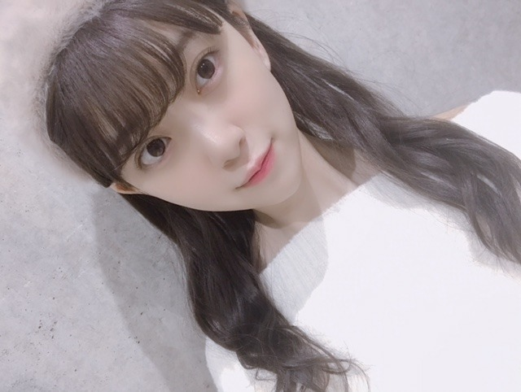

2018/1109Frigirls_blog_♡
ホットギミックで本格的に少女漫画に
はまりまして、最近は
恋するレイジーを読み始めました
おすすめがあれば教えてください☺︎

リクエストをいただいていた
女の子向けブログ。
お待たせしました☺︎
ありがたいことに
握手会にたくさんの女の子が来てくれて
いろんな質問をしてくれるのですが
詳しく答えることができなかったのが
いくつかあったので...
ブログにて失礼します☺︎
好きなブランド・洋服
あまりここ！とは決めずに
ぶらぶらして買っていますが
SNIDEL FURFUR sisterjane
ZARA Rosarymoon UNIQLOはよく着ます
海外に行った時に古着屋さんとか
セレクトショップで大量買いしてしまうので
そういうのも多いかな
ハイブランドは
SAINTLAURENT
j&m Davidson
が好きです

パーカーも好きでよく買います☺︎
これはQALBの！
数年前から
キャップやキャスケット
ベレー帽などのいろんな帽子と
サングラスを集めるのが趣味です
サングラスは空港でも買うし路面店でも
いいのを見つけたら買ってしまいます
かれこれ、10個以上はあるかなー。

ロングの茶髪はいつかしてみたい髪型の1つ☺︎
アッシュ系の髪色にもしてみたいです
ベリーショートも興味あるし...
生きているうちに
いろんな自分に出会いたいです
スキンケア・コスメ
そのときの肌の調子やマイブームで
変えていて、いまの化粧水乳液は
Celvokeを です
product SKII HAKU もお気に入り
未央奈の毎日メイク
#ベースメイク
下地...プリマヴィスタ
ファンデーション...江原道マイファンスィーアクアファンデーション012
コンシーラー...IPSAクリエイティブコンシーラー
パウダー...THREEアルティメイトダイアフェネスルースパウダー(カラーレス)01
チーク...クリニーク(ラベンダー)
#アイメイク
シャドウ...SUQQUデザイニングカラーアイズ04絢撫子
最近はずっとこれの右下と右上の色を混ぜて二重幅に塗っています
涙袋にはオンリーミネラルミネラルピグメントSM01フロスティピンクとキャンメイク ジュエリーシャドウベール03をぽんぽんと載せます
アイライン...kパレットDB 24wp
マスカラ...ヒロインメイク アドバンストフィルム02
基本アイラインとマスカラは茶色で
ナチュラルにボリュームアップします
#リップ
保湿...ミンティットローズリップバーム
色もつくし保湿がかなりされます
口紅...SUQQUモイスチャーリッチリップスティックシリーズはお気に入り
グロス...クラランスのリップオイル02とLusciouslipsの321とクルドポーボーテのブリアンアレーブルエクラ7
をよく使います
クラランスのリップオイルは定番に潤うので
何色かもってます〜
グロスや口紅は大好きなので色々集めてしまいます
#他
ハイライト...THREEシマリンググローデュオ01
これは鼻筋と涙袋に歌番組やライブの時は
必ずいれます
自然だけど全然違うし私のメイクでは欠かせません
涙袋整形した？って言われました。笑
整形はしてません。笑
こんなかんじかな？

季節やブームでコロコロ
メイクも変えているのでちょくちょく
載せますね♡
ちなみに好きな香水はmiumiuシリーズと
ジョーマローンシリーズです☺︎
あと、shiroのヘアミスト、ボディクリームも
愛用しています
ではmステ
行ってきます！！

2018/11/09 19:36
コメント(413)
白石ユキさんのまんがオススメ！
男性向けにもやってください！
スニーカー好きなのでお気に入りのスニーカーとか教えてほしいです！！
スニーカー好きなのでお気に入りのスニーカーとか教えてほしいです！！
可愛い！～
未央奈、ブログありがとう。
Mステ、ちゃんと観てたよ。見つけてたから。
ずっと推すからね。
いつも見つけますよ！
ではでは。
Mステ、ちゃんと観てたよ。見つけてたから。
ずっと推すからね。
いつも見つけますよ！
ではでは。
Mステの階段のところで未央奈と真夏さんがズッキュンしてたのわかりました
後で聞いたかもしれないけど後ろの若月さんもしてましたよ
レコメンリスナーとノリさんとの約束果たせてよかったね
少しだけIKKOさん期待してました笑
後で聞いたかもしれないけど後ろの若月さんもしてましたよ
レコメンリスナーとノリさんとの約束果たせてよかったね
少しだけIKKOさん期待してました笑
すごく詳しくありがとう みおなが使ってるものとても知りたかったので嬉しいです！これからも応援してます
みおなが使ってるものとても知りたかったので嬉しいです！これからも応援してます
こんにちは！
ずっと前からブログを読んでいたけれど、初めてコメントを送ろうと思って、送ってみました！いつも未央奈ちゃんのヘアメイクやファッションについて雑誌とかで読んできたので、今までとは違う内容を詳しくブログで書いてくれて、本当に嬉しかったです！
いつも応援しています！
これからの活動も無理せずに頑張ってください！
ずっと前からブログを読んでいたけれど、初めてコメントを送ろうと思って、送ってみました！いつも未央奈ちゃんのヘアメイクやファッションについて雑誌とかで読んできたので、今までとは違う内容を詳しくブログで書いてくれて、本当に嬉しかったです！
いつも応援しています！
これからの活動も無理せずに頑張ってください！
男だけどみおなにファッション教えてほしいわー笑
Mステ凄く良かった。髪切ってショートになってたし。
若様やな〜ちゃんとの思い出沢山作ってね。
未央奈ちゃん頑張って。
若様やな〜ちゃんとの思い出沢山作ってね。
未央奈ちゃん頑張って。
みおなちゃん更新ありがとう╰(*´︶`*)╯♡
少女漫画は分かりませぬ(ﾟoﾟ;;
最近はONE PIECEをまた買い始めてもう少しで最新巻に追いつきそうな感じです(*´꒳`*)
女の子向けブログご苦労様です(*ﾟ▽ﾟ*)
写真ありがと〜（╹◡╹）♡
少女漫画は分かりませぬ(ﾟoﾟ;;
最近はONE PIECEをまた買い始めてもう少しで最新巻に追いつきそうな感じです(*´꒳`*)
女の子向けブログご苦労様です(*ﾟ▽ﾟ*)
写真ありがと〜（╹◡╹）♡
girl's blog楽しみだったのでめっちゃ嬉しい！♡
本当にオシャレだし、
可愛くて憧れすぎるよ（ ; ; ）
前の握手会はテスト週間被ってて行けなかったから今回はいけるといいな、！
次のblogも楽しみにしてるね！☆
本当にオシャレだし、
可愛くて憧れすぎるよ（ ; ; ）
前の握手会はテスト週間被ってて行けなかったから今回はいけるといいな、！
次のblogも楽しみにしてるね！☆
Ｍステにバズリズム楽しみ～＾＾
みおな☆★☆タンポポだけども～♪♪♪
(σ≧▽≦)σ
みおなは可愛すぎる。
無表情だから
イメージが。
きょと、てイメージだから。
だからこそ
笑顔が輝いて見える！！
抱きしめたいほどにね
く、か、可愛い！！
てなるのね。
大好きやねん！！！
みおなはタンポポの人生のキキだよ！！タンポポはジジだよ！！
みおな猫アレルギーだけども！！
（*＾3＾）/～☆
かわかわいい！！♡
Mステすごくすごくよくて泣きました、
少女漫画はクズの本懐のと覆面型ノイズがおすすめです
Mステすごくすごくよくて泣きました、
少女漫画はクズの本懐のと覆面型ノイズがおすすめです
初めてコメントします
私もshiroのヘアミスト使ってます
ちなみに、どの香りが好きですか？
私もshiroのヘアミスト使ってます
ちなみに、どの香りが好きですか？
未央奈
グッドモーニングコールがオススメだよ！
グッドモーニングコールがオススメだよ！
未央奈ちゃん、ひろっしーです！コメント投稿530回目です！
前回はブログと「Mステ」とモバメの感想を書きました！
時間→「No.284 2018年11月10日 02:11」
モバメ毎日ありがとうございます！
前回書きましたが、「Mステ」観ました！勿論見つけられました！そんな、がっかりだなんてとんでもない！乃木坂が出演されるだけで凄く嬉しいですよ！しかも、選抜メンバーに選ばれなかったら出演出来ませんしね！
未央奈ちゃんが活躍される姿を観るだけで凄く嬉しいです！癒し・元気・刺激を頂いて改めて感謝しないといけないなと思いました！
なのに「もっともっと頑張らなくちゃ」という向上心に感心しちゃいます！
こちらこそいつもありがとうございます！
これからもずっと応援させて頂きます！
「CDTV」録画してるので11日の夜に観ます！
ここまで読んで頂きありがとうございました！
毎日お仕事お疲れ様です！体調にはくれぐれも気を付けて頑張ってくださいね！
おやすみおな～！
前回はブログと「Mステ」とモバメの感想を書きました！
時間→「No.284 2018年11月10日 02:11」
モバメ毎日ありがとうございます！
前回書きましたが、「Mステ」観ました！勿論見つけられました！そんな、がっかりだなんてとんでもない！乃木坂が出演されるだけで凄く嬉しいですよ！しかも、選抜メンバーに選ばれなかったら出演出来ませんしね！
未央奈ちゃんが活躍される姿を観るだけで凄く嬉しいです！癒し・元気・刺激を頂いて改めて感謝しないといけないなと思いました！
なのに「もっともっと頑張らなくちゃ」という向上心に感心しちゃいます！
こちらこそいつもありがとうございます！
これからもずっと応援させて頂きます！
「CDTV」録画してるので11日の夜に観ます！
ここまで読んで頂きありがとうございました！
毎日お仕事お疲れ様です！体調にはくれぐれも気を付けて頑張ってくださいね！
おやすみおな～！
堀さん、こんばんは。
Ｍステ見ました。ちゃんと歌中の堀さんの輝く笑顔を見付けられました。あとトーク部分でも堀さんの笑顔が見れて嬉しかったです。振り付けも道とか回りを表現してたのでしょうか、見た目が楽しくて何だか全員の表情も明るく感じました。
あと要望としては、もっと揺れる髪の方がより可愛くて好きです。
堀さんの納得できるパフォーマンスができるようにこれからも頑張ってくださいね。
Ｍステ見ました。ちゃんと歌中の堀さんの輝く笑顔を見付けられました。あとトーク部分でも堀さんの笑顔が見れて嬉しかったです。振り付けも道とか回りを表現してたのでしょうか、見た目が楽しくて何だか全員の表情も明るく感じました。
あと要望としては、もっと揺れる髪の方がより可愛くて好きです。
堀さんの納得できるパフォーマンスができるようにこれからも頑張ってくださいね。
いつもブログ読んでます。
堀ちゃんは人気メンバーなのに更新多いので乃木坂の中でもアイドルきちんとしててすごいなって思ってます。
女の子向けブログありがとう！めっちゃ嬉しいよ〜真似できるところ(金銭的な意味で)は参考にしてみるね！
堀ちゃんは人気メンバーなのに更新多いので乃木坂の中でもアイドルきちんとしててすごいなって思ってます。
女の子向けブログありがとう！めっちゃ嬉しいよ〜真似できるところ(金銭的な意味で)は参考にしてみるね！
だいすきー
ブログの更新ありがとう。
メイクについてはまったく分からないけど、メイクに関するブログは好きで毎回読んでるよ。
※メイクブログは何度か書いてくれてるよね。
握手会でも女の子ファンが増えたと感じるけど、755のコメントも女の子からのコメント増えたし、未央奈に影響を受けている女の子ってたくさんいるんだろうな。
Mステお疲れさまでした。
未央奈が音楽番組等にに出すると、無意識のうちに未央奈を探してる&目で追っている自分がいるんだよね。
というのも、未央奈が歌って踊ってる姿は輝いていて素敵だからなんだよね。
モバメを読んだけど、未央奈がとの位置にいても必ず見つけるからね。
ゴロ～
メイクについてはまったく分からないけど、メイクに関するブログは好きで毎回読んでるよ。
※メイクブログは何度か書いてくれてるよね。
握手会でも女の子ファンが増えたと感じるけど、755のコメントも女の子からのコメント増えたし、未央奈に影響を受けている女の子ってたくさんいるんだろうな。
Mステお疲れさまでした。
未央奈が音楽番組等にに出すると、無意識のうちに未央奈を探してる&目で追っている自分がいるんだよね。
というのも、未央奈が歌って踊ってる姿は輝いていて素敵だからなんだよね。
モバメを読んだけど、未央奈がとの位置にいても必ず見つけるからね。
ゴロ～
ブログ更新ありがと。
Ｍステかわいかった。
Ｍステかわいかった。
みおな〜！！！メイク超参考にします〜！！椿町ロンリープラネットは超おすすめだよ！！
女の子向けブログありがとう❥
すごく参考になりました〜
THREEのｼﾏﾘﾝｸﾞｸﾞﾛｰﾃﾞｭｵ買おうっと
すごく参考になりました〜
THREEのｼﾏﾘﾝｸﾞｸﾞﾛｰﾃﾞｭｵ買おうっと
女子ブログすごく楽しみにしてました！想像以上に詳しく書いてくれて嬉しいです。可愛い写真も沢山ありがとう♡
コスメ高いから全部マネするのは難しいかもしれないけど、ちょっとずつ未央奈のオススメ試してみたいなぁ⸜(*ˊᵕˋ*)⸝
ぱっと思いつくオススメの少女漫画は
アオハライド
君に届け
ひよ恋
おもいで金平糖
町田くんの世界
好きって言わせる方法
です！
少女漫画では無いけれど
3月のライオン
約束のネバーランド
も好きです！
MステとCDTVお疲れ様でした！
CDTV2回も抜かれていて嬉しかったし、カチューシャ含め髪型が可愛すぎました♡衣装もとっても素敵で似合ってました！
ピンで抜かれなくても気が付いたら未央奈を見ています。推しだからかなぁ。
未央奈のカメラアピール好きだからもちろん沢山抜かれてほしいけど、気にしすぎないでいいと思います︎！オタクは歌ったり踊ったりしている未央奈がチラッと映るだけで嬉しくなるものだと思うから︎☺︎
長文ごめんなさい！これからもブログ楽しみにしています︎☺︎
コスメ高いから全部マネするのは難しいかもしれないけど、ちょっとずつ未央奈のオススメ試してみたいなぁ⸜(*ˊᵕˋ*)⸝
ぱっと思いつくオススメの少女漫画は
アオハライド
君に届け
ひよ恋
おもいで金平糖
町田くんの世界
好きって言わせる方法
です！
少女漫画では無いけれど
3月のライオン
約束のネバーランド
も好きです！
MステとCDTVお疲れ様でした！
CDTV2回も抜かれていて嬉しかったし、カチューシャ含め髪型が可愛すぎました♡衣装もとっても素敵で似合ってました！
ピンで抜かれなくても気が付いたら未央奈を見ています。推しだからかなぁ。
未央奈のカメラアピール好きだからもちろん沢山抜かれてほしいけど、気にしすぎないでいいと思います︎！オタクは歌ったり踊ったりしている未央奈がチラッと映るだけで嬉しくなるものだと思うから︎☺︎
長文ごめんなさい！これからもブログ楽しみにしています︎☺︎
堀ちゃん～おうつくしい～～～！
こんばんは
コメントの名前変えました！
JからJYに！
よろしくお願いしますm(_ _)m
ちなみに、
JYのYは、娘の名前の頭文字☺︎
「恋するレイジー」、
電子版で少し読んでます♪(無料立読みで)
「ういらぶ。」の作家さんと一緒ですね♪
そうそう、
昨日、高1の上の姪っ子が、
友達と映画「ういらぶ。」を観に行った
そうです！
「恋するレイジー」の主人公の
かのちゃんの髪型と
未央奈さんの髪型、似てますね☺︎♡
かわいい！
サングラスは、私も好きです！
運転は勿論で、
この前、
初めて、コンビニや銀行で掛けたまま
入ってそのまま用事済ませて出てきました
めちゃめちゃ緊張しました...笑
ε=ε=ε=ε=ε=ε=┌(;￣◇￣)┘
内心、心臓バクバクでした！小心者！
もうやらないかも(>_<)
ロングの髪型の女性も好きなので、
茶髪の女性も好きなので、、
「いつかそんな未央奈にも、
出会わせてくれっ♡」
(イケメン風に言ってみました笑)
涙袋、ホントにぃい？笑
いや、私は、信じてます！笑(￣^￣)ゞ
Mステ観てました！
凄く楽しめました♪
ありがとう！
元気出たー！！
CDジャケットの写真の衣装、
いい感じですね♪
今回も素敵な写真たち、ありがとう◎
本当に
瞳が、綺麗だね☺︎
またね♪
コメントの名前変えました！
JからJYに！
よろしくお願いしますm(_ _)m
ちなみに、
JYのYは、娘の名前の頭文字☺︎
「恋するレイジー」、
電子版で少し読んでます♪(無料立読みで)
「ういらぶ。」の作家さんと一緒ですね♪
そうそう、
昨日、高1の上の姪っ子が、
友達と映画「ういらぶ。」を観に行った
そうです！
「恋するレイジー」の主人公の
かのちゃんの髪型と
未央奈さんの髪型、似てますね☺︎♡
かわいい！
サングラスは、私も好きです！
運転は勿論で、
この前、
初めて、コンビニや銀行で掛けたまま
入ってそのまま用事済ませて出てきました
めちゃめちゃ緊張しました...笑
ε=ε=ε=ε=ε=ε=┌(;￣◇￣)┘
内心、心臓バクバクでした！小心者！
もうやらないかも(>_<)
ロングの髪型の女性も好きなので、
茶髪の女性も好きなので、、
「いつかそんな未央奈にも、
出会わせてくれっ♡」
(イケメン風に言ってみました笑)
涙袋、ホントにぃい？笑
いや、私は、信じてます！笑(￣^￣)ゞ
Mステ観てました！
凄く楽しめました♪
ありがとう！
元気出たー！！
CDジャケットの写真の衣装、
いい感じですね♪
今回も素敵な写真たち、ありがとう◎
本当に
瞳が、綺麗だね☺︎
またね♪
ラストゲームっていう漫画おすすめです！
なんかすごいかわいらしいです！
男の自分もドキドキしました笑
なんかすごいかわいらしいです！
男の自分もドキドキしました笑
みおちゃん(o^^o)
女の子向けブログ、楽しみにしていました♡
ありがとう♡♡
私も2年位前からSUQQUをよく使ってるから、みおちゃんと同じの使ってると知れてとても嬉しい(*´꒳`*)
他のコスメも参考にします♫
握手会で着てる、みおちゃんの洋服がいつも可愛くて気になってたので、次出掛けた時に見てみるね(^^)
いつも、ありがとう。
だいすきです♡
女の子向けブログ、楽しみにしていました♡
ありがとう♡♡
私も2年位前からSUQQUをよく使ってるから、みおちゃんと同じの使ってると知れてとても嬉しい(*´꒳`*)
他のコスメも参考にします♫
握手会で着てる、みおちゃんの洋服がいつも可愛くて気になってたので、次出掛けた時に見てみるね(^^)
いつも、ありがとう。
だいすきです♡
堀ちゃんこんばんは！
たくさんブログ更新してくれてありがとうございます！！(o^^o)
毎回コメントするのを、勝手に目指してるんですが追いつかなかったです、今一度気合いを入れ直します…！( ´ 〜 ` )笑
ガールズブログいいですね〜、堀ちゃんのメイクとか知れるって、女の子たちはたまらなく嬉しいと思います(o^^o)
僕もメイクはしませんが、肌ケアとかの自分磨きは男でもしっかりやろうと思います！笑
そしてそして、最近テレビで堀ちゃんを観られる機会が多くて凄く嬉しいです！！
帰り道は遠回りしたくなる、爽やか切ない曲調がとても好きです、それを堀ちゃんを始めみんなが優しい笑顔で踊っているパフォーマンス、めちゃくちゃ好きです( ´ ▽ ` )
これからも観られる機会があるみたいですし、一回一回そのときにしかないパフォーマンスを、僕も大事にしながら観ます(o^^o)
堀ちゃんは「観てくれる人のために」や「がっかりさせないように」と言ってくれることが多いですよね。
そう想ってくれることが凄く嬉しいですし、そう口に出してくれて伝えてくれることも物凄く嬉しいです(^^)
ただ知っていてほしいのは、堀ちゃんが一生懸命パフォーマンスしてくれていることを知っているのに、その姿を見てガッカリするなんて絶対にありませんよ！
逆に、見るたびにどんどん好きになってます、毎回更新中です( ´ ▽ ` )
過去の堀ちゃんももちろん好きですが、いま現在の僕たちの前にいる堀ちゃんが一番大好きです、間違いないです(o^^o)
だからどうというわけではないかもしれませんが、それだけは知ってもらえたらいいなぁと思ってます( ´ ▽ ` )
と、個人的な気持ちを書き連ねてしまいましたが、これからも堀ちゃんが楽しそうに笑顔で歌ってる姿、踊ってる姿を観られるのをめちゃくちゃ楽しみにしています！(o^^o)
ではでは、お忙しいと思いますがお身体には気をつけて、堀ちゃんが毎日元気に楽しく過ごせることを心から願っています( ´ ▽ ` )
たくさんブログ更新してくれてありがとうございます！！(o^^o)
毎回コメントするのを、勝手に目指してるんですが追いつかなかったです、今一度気合いを入れ直します…！( ´ 〜 ` )笑
ガールズブログいいですね〜、堀ちゃんのメイクとか知れるって、女の子たちはたまらなく嬉しいと思います(o^^o)
僕もメイクはしませんが、肌ケアとかの自分磨きは男でもしっかりやろうと思います！笑
そしてそして、最近テレビで堀ちゃんを観られる機会が多くて凄く嬉しいです！！
帰り道は遠回りしたくなる、爽やか切ない曲調がとても好きです、それを堀ちゃんを始めみんなが優しい笑顔で踊っているパフォーマンス、めちゃくちゃ好きです( ´ ▽ ` )
これからも観られる機会があるみたいですし、一回一回そのときにしかないパフォーマンスを、僕も大事にしながら観ます(o^^o)
堀ちゃんは「観てくれる人のために」や「がっかりさせないように」と言ってくれることが多いですよね。
そう想ってくれることが凄く嬉しいですし、そう口に出してくれて伝えてくれることも物凄く嬉しいです(^^)
ただ知っていてほしいのは、堀ちゃんが一生懸命パフォーマンスしてくれていることを知っているのに、その姿を見てガッカリするなんて絶対にありませんよ！
逆に、見るたびにどんどん好きになってます、毎回更新中です( ´ ▽ ` )
過去の堀ちゃんももちろん好きですが、いま現在の僕たちの前にいる堀ちゃんが一番大好きです、間違いないです(o^^o)
だからどうというわけではないかもしれませんが、それだけは知ってもらえたらいいなぁと思ってます( ´ ▽ ` )
と、個人的な気持ちを書き連ねてしまいましたが、これからも堀ちゃんが楽しそうに笑顔で歌ってる姿、踊ってる姿を観られるのをめちゃくちゃ楽しみにしています！(o^^o)
ではでは、お忙しいと思いますがお身体には気をつけて、堀ちゃんが毎日元気に楽しく過ごせることを心から願っています( ´ ▽ ` )
堀ロング可愛い！
こんばんは〜未央奈♪
今日はポッキーの日だね！
未央奈は食べた？こっちはさっき食べました。にやにや
きたぁ〜〜girls_blog_♡〜〜
恋するレイジー1巻だけ読めたけどおもしろいね。マジメはポンコツ。いいね。
こっちのおすすめはアクタージュ！☺︎
女優さんの顔してる。って初めてアー写見たとき思った。笑
似合うね、ヒョウ柄も。(^-^)
すごい！女の人にも人気な未央奈♪
おぉ〜〜ブランド。
さすが。
パーカー未央奈もかわいい。
おしゃれさんですね。
10個以上！すご！
生きてるうちにいろんな自分に出会いたい。
良いこと言うね。こっちもいろんな未央奈がみたい。☺︎
ふむふむ。ほぉほぉ。
未央奈の毎日メイク✨
教えてもらっていいんですか！！！
ぽんぽん。
すごいね。しっかり伝わってきたよ。
涙袋。笑
かわい〜
かわいい未央奈が更にかわいくなってるメイク法を教えていただきありがとうございます。
なんだか最近未央奈をみて、かわいい以外の言葉が出ないぐらいかわいいわ。
語彙力を低下させないで！笑
ちょくちょく待ってます♡
香水！メモメモ。
いってらっしゃい！
…(mステ後)
mステよかったよ。ちゃんと見えてるよ。
だって未央奈のファンだもん。未央奈しか見えないよ。
さてさて。
では！またがんばっていこー！！
今日はポッキーの日だね！
未央奈は食べた？こっちはさっき食べました。にやにや
きたぁ〜〜girls_blog_♡〜〜
恋するレイジー1巻だけ読めたけどおもしろいね。マジメはポンコツ。いいね。
こっちのおすすめはアクタージュ！☺︎
女優さんの顔してる。って初めてアー写見たとき思った。笑
似合うね、ヒョウ柄も。(^-^)
すごい！女の人にも人気な未央奈♪
おぉ〜〜ブランド。
さすが。
パーカー未央奈もかわいい。
おしゃれさんですね。
10個以上！すご！
生きてるうちにいろんな自分に出会いたい。
良いこと言うね。こっちもいろんな未央奈がみたい。☺︎
ふむふむ。ほぉほぉ。
未央奈の毎日メイク✨
教えてもらっていいんですか！！！
ぽんぽん。
すごいね。しっかり伝わってきたよ。
涙袋。笑
かわい〜
かわいい未央奈が更にかわいくなってるメイク法を教えていただきありがとうございます。
なんだか最近未央奈をみて、かわいい以外の言葉が出ないぐらいかわいいわ。
語彙力を低下させないで！笑
ちょくちょく待ってます♡
香水！メモメモ。
いってらっしゃい！
…(mステ後)
mステよかったよ。ちゃんと見えてるよ。
だって未央奈のファンだもん。未央奈しか見えないよ。
さてさて。
では！またがんばっていこー！！
未央奈ちゃんブログ更新ありがとう
少女漫画はおすすめというか唯一読んでるのがちはやふる
未央奈ちゃんずっと可愛い
少女漫画はおすすめというか唯一読んでるのがちはやふる
未央奈ちゃんずっと可愛い
未央奈ちゃん！！私も恋するレイジー大好きで、全巻持ってるんだ☺︎今映画公開してる｢ういらぶ。｣と同じ作者だよね！ポンコツなのに一生懸命頑張るかのちゃん可愛いよね( ˆoˆ )ちなみに私が一番好きなシーンは、16話のラストシーンの玲次くんのセリフ、｢めんどくていーやっと来た｣がすごい好きで、Sho-Comiで読んだ時からキュンキュンしっぱなしで何回繰り返したことだか！！笑うだうだなのにかのちゃんのことになると周りが見えなくなる玲次くんかっこいいよね！！
ブログ更新ありがとう✨
今日は新しいコトに触れられて
心が少し豊かになった様な気がしてるんだ。
自分が知らない世界に一歩踏み出すことは良いことなんだね♪
明日も1日頑張ろう٩( 'ω' )و
今日は新しいコトに触れられて
心が少し豊かになった様な気がしてるんだ。
自分が知らない世界に一歩踏み出すことは良いことなんだね♪
明日も1日頑張ろう٩( 'ω' )و
ずっと女の子ブログ待ってた嬉しい〜〜！
正直、女性用のブログだったので、よく、わからなかったのですが、言えることは、堀さんは、ちゃんと花を咲かせているので、立派だなぁ、偉いな、と思いました。堀さんの心の中に光り輝くダイヤモンドあるんですね、アイドルという名の光り輝くダイヤモンド。それは永遠です。あとミュージックステーション観ました。堀さんが一番バッチリ決まってました。テレビ局のプロデュサーさんは、もっと、堀さんのアップと忌野清志郎さんパフォーマンスを長く映すべきだと思いました。出演者の中で堀さんが一番カッコよかったです。
いろいろ教えてくれてありがと！！！！
未央奈ちゃん、こんにちは。
このブログをみて、改めて女子は大変だと思いました。未央奈ちゃんもメイクの研究や努力しているのがわかりました。
歌番組で未央奈ちゃんを沢山見たいです‼
乃木坂46と頑張ってるcuteでsmartな未央奈ちゃんを応援しています。
このブログをみて、改めて女子は大変だと思いました。未央奈ちゃんもメイクの研究や努力しているのがわかりました。
歌番組で未央奈ちゃんを沢山見たいです‼
乃木坂46と頑張ってるcuteでsmartな未央奈ちゃんを応援しています。
こんばんは
寒くなってきましたね～
CDTVの方も素晴らしかったですよー！
髪型もとっても可愛いらしかったです♡
乃木中のオープニングも嬉しかったです！
みーちゃんを見られるだけで有り難いです☆
みーちゃんらしく今後も活動して下さいね♪
アウトドアに行ったら、
花粉症!?でダウンしてしまいましたよ～
季節の変わり目だから体調に気をつけてね☺
寒くなってきましたね～
CDTVの方も素晴らしかったですよー！
髪型もとっても可愛いらしかったです♡
乃木中のオープニングも嬉しかったです！
みーちゃんを見られるだけで有り難いです☆
みーちゃんらしく今後も活動して下さいね♪
アウトドアに行ったら、
花粉症!?でダウンしてしまいましたよ～
季節の変わり目だから体調に気をつけてね☺
みおな〜♪
こんばんはっ！
お久しぶりです、ずっきゅん依存症です
今日は、突貫工事のスケジュールで
朝方、北海道まで行って今しがた東京に
戻ってきました
あぁ、北海道では冬の足音が...
などと感傷にふける暇もなく
さっさと用事を済ませて帰ってきました
疲れたぁ〜_(:3ゝ∠)_
ロンドン留学中に教わった話
英語の｢understand｣は、｢理解する｣という
意味だけど、この語源を知ると
より人生が楽しくなるかも
｢understand｣(理解する)とは
文字どおり、
相手の｢下｣(under)に｢立つ｣(stand)
という意味です
ずっきゅん依存症は、出会った人を、
｢この人はなんの天才なんだろう？｣
と、まず考えるようにしています
相手を、｢天才なんだ｣という前提で見る
すると、相手の中のすごいところが見えてくる
自分が一番下に立てば、みんな高くなる
水は高いところから低いところへ
流れるように、エネルギーも情報も
高いところから低いところへ
流れていきます
そうしたら、出会った相手から、
たくさんのことを教えてもらえるように
なります
｢この人はなんの天才なんだろう？｣と
向き合うことで、初めて相手の
本当の魅力を｢理解｣できる
それを、日本人は、こんなことわざで
表現してます
｢実るほど頭を垂れる稲穂かな｣
いつまでも稲穂の心でいたいものです
こんばんはっ！
お久しぶりです、ずっきゅん依存症です
今日は、突貫工事のスケジュールで
朝方、北海道まで行って今しがた東京に
戻ってきました
あぁ、北海道では冬の足音が...
などと感傷にふける暇もなく
さっさと用事を済ませて帰ってきました
疲れたぁ〜_(:3ゝ∠)_
ロンドン留学中に教わった話
英語の｢understand｣は、｢理解する｣という
意味だけど、この語源を知ると
より人生が楽しくなるかも
｢understand｣(理解する)とは
文字どおり、
相手の｢下｣(under)に｢立つ｣(stand)
という意味です
ずっきゅん依存症は、出会った人を、
｢この人はなんの天才なんだろう？｣
と、まず考えるようにしています
相手を、｢天才なんだ｣という前提で見る
すると、相手の中のすごいところが見えてくる
自分が一番下に立てば、みんな高くなる
水は高いところから低いところへ
流れるように、エネルギーも情報も
高いところから低いところへ
流れていきます
そうしたら、出会った相手から、
たくさんのことを教えてもらえるように
なります
｢この人はなんの天才なんだろう？｣と
向き合うことで、初めて相手の
本当の魅力を｢理解｣できる
それを、日本人は、こんなことわざで
表現してます
｢実るほど頭を垂れる稲穂かな｣
いつまでも稲穂の心でいたいものです
堀ちゃんブログありがとー。
Mステおつかれさまでした
Mステおつかれさまでした
お団子堀殿♡きゃわわうれぴーぽーo(￣◎￣)o ﾊﾞﾌﾞｩ♡
みおなー
ar見たよ！
色んな表情がかわいかった♪
クリスマス気分高まるわ～
まぁ自分は仕事なんだけどね！
おもてなしの達人のアジの三枚下ろしで
わたを取り除くときに
グロテスク～ってうれしそうなみおなも
面白かった笑
やっぱりホラー好きよね！
みおなはみおなのままなのが
なんだかうれしかったよ(^^)
ar見たよ！
色んな表情がかわいかった♪
クリスマス気分高まるわ～
まぁ自分は仕事なんだけどね！
おもてなしの達人のアジの三枚下ろしで
わたを取り除くときに
グロテスク～ってうれしそうなみおなも
面白かった笑
やっぱりホラー好きよね！
みおなはみおなのままなのが
なんだかうれしかったよ(^^)
未央奈ー❗️
ブログありがとう❗️
女の子向けブログいいね✨
専属モデルしてるし未央奈から
教えてもらえるなんて❗️
でも僕はあんまりわかんない...
このブログで少しはなんとなくわかった...かな⁉️
ゆうたんより
ブログありがとう❗️
女の子向けブログいいね✨
専属モデルしてるし未央奈から
教えてもらえるなんて❗️
でも僕はあんまりわかんない...
このブログで少しはなんとなくわかった...かな⁉️
ゆうたんより
未央奈ちゃんおはよう(o^^o)
今夜うたコンとウチのガヤがすみません！楽しみ(o^^o)
生放送頑張って
斉藤貴巳
今夜うたコンとウチのガヤがすみません！楽しみ(o^^o)
生放送頑張って
斉藤貴巳
風邪が流行ってるんで体に気をつけてね。
王道なやつだとNANAが好きです。
あと最近はドラマ化が決まった初めて恋をした日に読む話っていう漫画オススメです。笑って胸キュンできるラブコメです
あと最近はドラマ化が決まった初めて恋をした日に読む話っていう漫画オススメです。笑って胸キュンできるラブコメです
みおなちゃん、こんにちは！
女の子向けブログありがとう(*´`)
すごく参考になるし、嬉しい!
色々チェックしてみるね!
明日からもfight!!
女の子向けブログありがとう(*´`)
すごく参考になるし、嬉しい!
色々チェックしてみるね!
明日からもfight!!


着飾る事(オシャレ)で誰かの心に響く事だってあるよな..ごめんなさい
俺は男だけど、未央奈がオススメする恋するレイジーってのを読んでみるよー何事も勉強だよな(*´ー｀*)
今はね..少女漫画コーナーに行かなくても、電子書籍で買えるから助かる。笑
風呂あがってから早速ナノケアを使ってみるぞサラサラー。笑
おやすみおなー